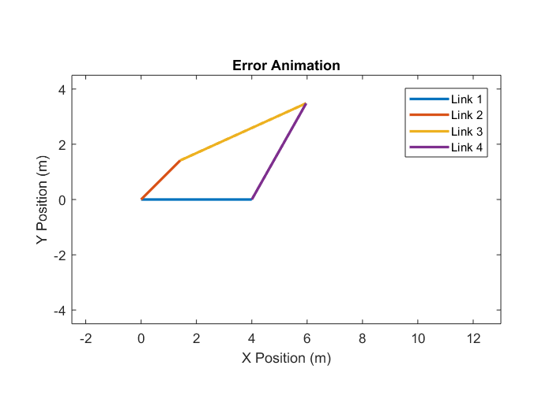
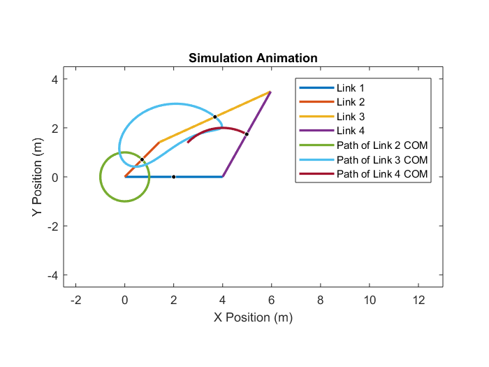
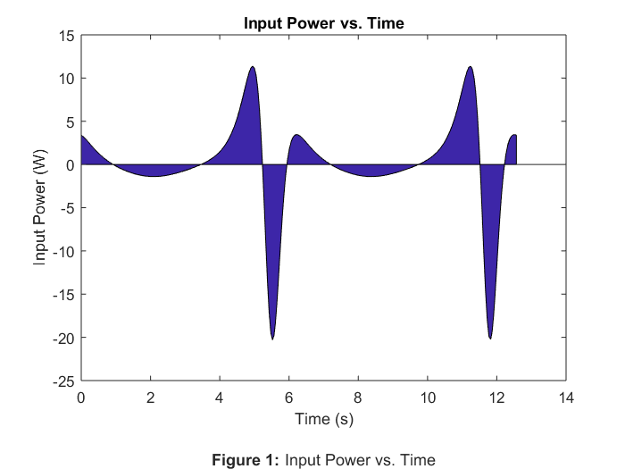

Rahul_Goyal_main Usage and Description
ME 326 Winter 2018 - Laboratory Assignment #6
Author: RAHUL GOYAL
California Polytechnic State University, San Luis Obispo, CA
Date Created: March 06, 2018
Date Modified: March 13, 2018
Description: This script simulates the motion of a crank-rocker. Afterwards, it animates the crank-rocker by using the simulation data and compares input power to time.
Required Files:
- MyPosIC.m - This file contains a function that represents the error for a set of given initial angular positions of the links of the crank-rocker. It returns the error with an input of link lengths, the angular position of link 2, and a guess for the angular positions of link 3 and link 4.
- Simulator.slx - This file uses Simulink to double integrate part of a MATLAB Function Block which describes the accelerations and forces of the simulation (only the accelerations are integrated). It outputs the positions as xout, the velocities as vout, the accelerations as aout, the forces as Fout, and the times as tout with inputs of the MATLAB function, initial conditions, and final condition.
- link_solver.m - This file contains a function that represents the accelerations and forces of the simulation. It returns x with an input of u.
Called Functions
Still To Do:
- Done!
Contents
Problem Statement
Choose a set of link lengths within the rocker crank constraint to design a mechanism. Assume the input crank, R2, moves at a constant angular velocity. Develop the kinematic and kinetic equations of motion. Produce an animation of the rocker-crank linkage and determine the input power as a function of time.
Reset
The following was used while debugging.
close all; clear all; clc;
Declare Global Variables
The following declares global variables.
global image t_step;
Set Values
The following is used to easily change the lengths of the links, the initial angular position of link 2, and the angular velocity of link 2. (A Grashof mechanism has the constraint R1 + R2 <= R3 + R4).
r = [4, 2, 5, 4]; % Length of links 1, 2, 3, 4 (m) t2_0 = deg2rad(45); % Angular position initial of link 2 (rad) tdot_2 = 1; % Angular velocity of link 2 (rad/s)
Given Values
The following assigns values given by the problem statement to variables.
t2_f = t2_0+4*pi; % Angular position final of link (rad)
Position Initial Conditions
The following sets the position initial conditions of the crank-rocker.
t3_0 = 0; % Angular position initial of link 3 (rad) [GUESS] t4_0 = 0; % Angular position initial of link 4 (rad) [GUESS] % Set up an anonymous function for fminsearch minimize = @(x) MyPosIC(r, t2_0, x); % Minimize the error in the initial angular positions of link 3 and link 4 t_0 = fminsearch(minimize, [t3_0, t4_0], optimset('TolFun', 1e-6)); % Plot labeling (last frame) title('Error Animation'); xlabel('X Position (m)'); ylabel('Y Position (m)'); legend('Link 1', 'Link 2', 'Link 3', 'Link 4'); % Easy access to... t3_0 = t_0(1); % Angular position initial of link 3 (rad) t4_0 = t_0(2); % Angular position initial of link 4 (rad) % Simplicity and Compactness of Notation c2_0 = cos(t2_0); s2_0 = sin(t2_0); c3_0 = cos(t3_0); s3_0 = sin(t3_0); c4_0 = cos(t4_0); s4_0 = sin(t4_0); x2_0 = r(2)/2*c2_0; % COM[x] initial of link 2 (m) y2_0 = r(2)/2*s2_0; % COM[y] initial of link 2 (m) x3_0 = r(2)*c2_0 + r(3)/2*c3_0; % COM[x] initial of link 3 (m) y3_0 = r(2)*s2_0 + r(3)/2*s3_0; % COM[y] initial of link 3 (m) x4_0 = r(1) + r(4)/2*c4_0; % COM[x] initial of link 4 (m) y4_0 = r(4)/2*s4_0; % COM[y] initial of link 4 (m) % Position Initial Conditions Matrix x_0 = [t3_0, t4_0, x2_0, y2_0, x3_0, y3_0, x4_0, y4_0];
Velocity Initial Conditions
The following sets the velocity initial conditions of the crank-rocker.
A = [-r(3)*s3_0, r(4)*s4_0
r(3)*c3_0, -r(4)*c4_0];
b = [r(2)*s2_0*tdot_2
-r(2)*c2_0*tdot_2];
w_0 = A \ b;
% Easy access to...
tdot3_0 = w_0(1); % Angular velocity initial of link 3 (rad/s)
tdot4_0 = w_0(2); % Angular velocity initial of link 4 (rad/s)
% Velocity_G[x] initial of link 2
xdot2_0 = -r(2)/2*s2_0*tdot_2;
% Velocity_G[y] initial of link 2
ydot2_0 = r(2)/2*c2_0*tdot_2;
% Velocity_G[x] initial of link 3
xdot3_0 = -r(2)*s2_0*tdot_2 - r(3)/2*s3_0*tdot3_0;
% Velocity_G[y] initial of link 3
ydot3_0 = r(2)*c2_0*tdot_2 + r(3)/2*c3_0*tdot3_0;
% Velocity_G[x] initial of link 4
xdot4_0 = -r(4)/2*s4_0*tdot4_0;
% Velocity_G[y] initial of link 4
ydot4_0 = r(4)/2*c4_0*tdot4_0;
% Velocity Initial Conditions Matrix
v_0 = [tdot3_0, tdot4_0, xdot2_0, ydot2_0, xdot3_0, ydot3_0, xdot4_0, ydot4_0];
Simulate the Crank-Rocker Using Simulink
The following calls the Simulink file Simulator.slx, which outputs the positions as xout, the velocities as vout, the accelerations as aout, the forces as Fout, and the times as tout with with link_solver.m as the input for the MATLAB Fuction, tdot_2, t2_0, v_0, and x_0 as the inputs for the initial conditions, and t2_f as the input for the final conditions.
sim('Simulator.slx');
Simulation Animation
The following animates the crank-rocker by using the simulation data.
% Cartesian Coordinates of Link 1 r1_x = [0, r(1)]; r1_y = [0, 0]; % Cartesian Coordinates of COM of Link 1 x_1 = (r1_x(end)-r1_y(1))/2; y_1 = (r1_y(end)-r1_y(2))/2; % Easy access to... t_2 = t2_0 + tdot_2*tout; % Angular positions of link 2 (rad) t_3 = xout(:, 1); % Angular positions of link 3 (rad) t_4 = xout(:, 2); % Angular positions of link 4 (rad) x_2 = xout(:, 3); % COMs[x] of link 2 (m) y_2 = xout(:, 4); % COMs[y] of link 2 (m) x_3 = xout(:, 5); % COMs[x] of link 3 (m) y_3 = xout(:, 6); % COMs[y] of link 3 (m) x_4 = xout(:, 7); % COMs[x] of link 4 (m) y_4 = xout(:, 8); % COMs[y] of link 4 (m) for t = 1:length(tout) % Cartesian Coordinates of Link 2 r2_x = [0, r(2)*cos(t_2(t))]; r2_y = [0, r(2)*sin(t_2(t))]; % Cartesian Coordinates of Link 3 r3_x = [r2_x(end), r2_x(end) + r(3)*cos(t_3(t))]; r3_y = [r2_y(end), r2_y(end) + r(3)*sin(t_3(t))]; % Cartesian Coordinates of Link 4 r4_x = [r1_x(end), r1_x(end) + r(4)*cos(t_4(t))]; r4_y = [r1_y(end), r1_y(end) + r(4)*sin(t_4(t))]; % Plot the links, COMs, COM paths plot(r1_x, r1_y, ... % Link 1 r2_x, r2_y, ... % Link 2 r3_x, r3_y, ... % Link 3 r4_x, r4_y, ... % Link 4 x_2(1:t), y_2(1:t), ... % Path of link 2 COM x_3(1:t), y_3(1:t), ... % Path of link 3 COM x_4(1:t), y_4(1:t), ... % Path of link 4 COM 'LineWidth', 2); % Line Properties % COM of Link 1 viscircles([x_1, y_1], 0.025, 'Color', 'k'); % COM of Link 2 viscircles([x_2(t), y_2(t)], 0.025, 'Color', 'k'); % COM of Link 3 viscircles([x_3(t), y_3(t)], 0.025, 'Color', 'k'); % COM of Link 4 viscircles([x_4(t), y_4(t)], 0.025, 'Color', 'k'); % Keep the frame consistent axis equal; axis([-r(2)-0.5, r(1)+r(4)+5, -r(4)-0.5, r(4)+0.5]); % Calculate the time step and pause accordingly if t ~= length(tout) % Prevent index error % Calculate the time step (s) and store for later use t_step(length(t_step)+1) = tout(t+1) - tout(t); % pause(t_step(t)); % Assume negligible processing time else t_step(length(t_step)+1) = 0; end % Convert the plot frame to an image and store for later use image{length(image)+1} = frame2im(getframe(1)); end % Plot labeling (last frame) title('Simulation Animation'); xlabel('X Position (m)'); ylabel('Y Position (m)'); legend('Link 1', 'Link 2', 'Link 3', 'Link 4', ... 'Path of Link 2 COM', 'Path of Link 3 COM', 'Path of Link 4 COM');
Export as GIF
The following exports the animation as an animated GIF.
file_name = 'CrankRockerAnimation.gif'; for i = 1:length(image) % Convert the RGB image to an indexed image [A, map] = rgb2ind(image{i}, 256); % If first iteration, also run setup code if i == 1 imwrite(A, map, file_name, ... 'LoopCount', inf, ... 'DelayTime', t_step(i)); % Else, append images else imwrite(A, map, file_name, ... 'WriteMode', 'append', ... 'DelayTime', t_step(i)); end end
Input Power vs. Time
The following plots the input power as a function of time.
The input power can be defined by the input torque times the angular velocity. The area under the curve represents energy because energy is equivalent to the integral of power with respect to time.
The graph of the input power resembles the graph of the input torque, however this is only because the angular velocity of link 2 is constant. By visual observation, the areas under the curve sum to zero. Therefore, energy is conserved over a cycle.
T = Fout(:, 9); % Input torque (Nm) P = T*tdot_2; % Input power (W) % Plot area(tout, P); title('Input Power vs. Time'); xlabel({'Time (s)' '' % Figure label '\bfFigure 1: \rmInput Power vs. Time'}); ylabel('Input Power (W)'); % Find the area under the curve A = trapz(tout, P); % Trapezoidal numerical integration fprintf("The area under the curve is approximately: "); fprintf(num2str(A)); fprintf(" J.");
The area under the curve is approximately: 0.011162 J.